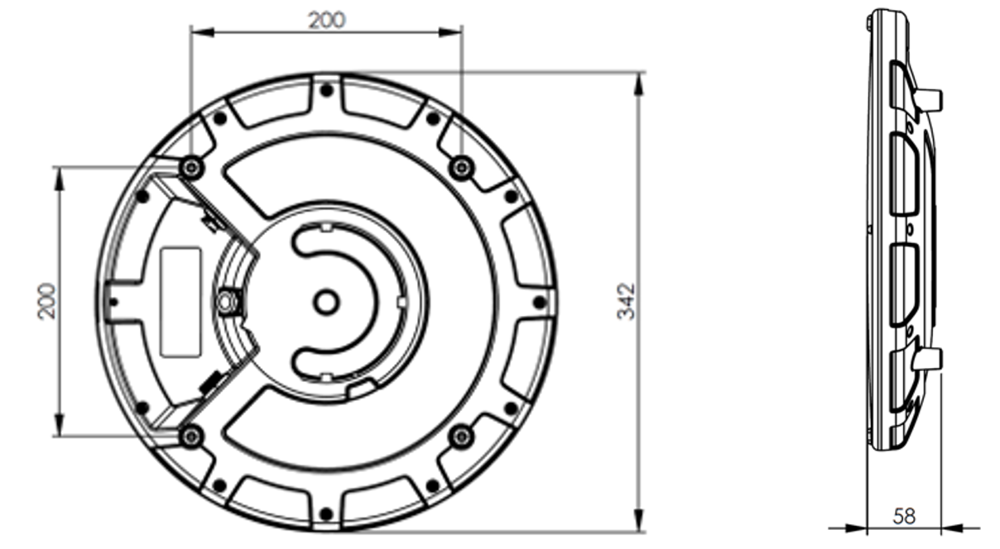

Q35 Locator Product Description

Overview
The Generation Q Quuppa Locator Q35 is the newest addition to the Generation Q product line. The Q35 boasts a smaller, lighter design with a considerable increase in performance and a variety of other improved hardware components and firmware features compared to its predecessor, the LD-7L Locator. The Q35 is designed for use in industrial and outdoor environments and it’s future-proof design enables the adding of new features later on.
The Q35 Locator works together with the Quuppa Locator Subscription. The Quuppa Locator Subscription must be valid to operate the Locator unit. The subscription model provides added flexibility to move Locators between projects as needed, even into existing projects that are currently using LD Generation Locators. In mixed projects all Locators must have either a valid subscription or license to enable the Quuppa Positioning Engine (QPE) to run.
This document provides an overview of the new features made available by the Q35 Locator. Quuppa reserves the right to make any changes to the features of this product at any time.
We hope this new release will inspire and help you to Do More With Location.Hardware Upgrades
Design
The Q35 Locator is smaller in size (Ø: 342 mm, h: 55 mm) compared to the LD-7L Locator (400 mm × 308 mm × 59 mm) and significantly lighter (1300g) than the LD Generation LD-7L Locators (4000g). The new design enables superior delivery efficiency as now as many as 90 Locators can fit onto the same pallet.

Power Source
The Q35 Locator offers a standard Micro USB port (5V) for powering, in addition to the Power-over-Ethernet (PoE) powering option.
The USB port of the Q35 is USBFirewire RR-11A200-0P-XX and it accepts USBFirewire RR-11B220-05-XX series waterproof USB cables.
Plug & Play Ethernet
The Q35 offers a full-duplex, Power Class 1 (very low power) 100 Mbit/s Ethernet for faster network connectivity with support for all cable types, enabling plug & play compatibility with all switches.
The Ethernet port of the device is USB Firewire RR-125300-03-ZX (i.e. GTContact GT125300-03-Z3). It is compatible with e.g. the following:
- Ready made cables, where the waterproof connector has been attached by the cable manufacturer: USB Firewire RR-125320-02-XX (i.e. GTContact GT125320-0X-xx).
- Connector housing parts to be used over the RJ45 connector: USB Firewire RR-125360-00 or USB Firewire RR-125330-00.
Mounting Brackets
The Q35’s mounting holes are arranged according to VESA MIS-F, 200, Y, 6 standard (Four M6 threaded holes in 200x200mm pattern). This makes the device compatible with a wide range of mounting brackets available on the market, allowing the selection of the most suitable one for the installation environment in question.
Multi-Coloured LED
The Q35 comes with a multi-coloured LED indicator light to allow users to immediately recognise and assess the status of the Locator.
Crypto Chip
A state of the art crypto chip has been included in the Q35 Locator for enhanced security. On top of the LD generation security features, the crypto chip enhances the security of the data traffic between the Locator and the QPE, enables authenticated firmware updates and allows the use of Locators with the offline module for deployments in high-security isolated environments.
Durability Upgrades
IP66 Rating
The Q35 has an IP rating of IP66, which classifies the device as both waterproof and dustproof, making it suitable for outdoor use in a variety of environments and weather conditions as well as in industrial use.
Operating Temperature Range
The Q35 can be used and stored within the temperature ranges shown in the table below.
| Operating temperature range | -20°C…+60°C |
| Storage temperature range | -30°C…+70°C |
Mechanical Durability
The Q35 is a durable product that has been tested for mechanical durability against mechanical impacts (e.g. IK 09 rating) and vibration.
The Q35 can withstand salt-laden environments, having been tested with cyclic salt mist (as specified in IEC 60068-2).
The Q35 also passed UV exposure tests (e.g IEC/EN60068-2-5).
Performance Upgrades
Locator Capacity
The Q35 Locator has a measured throughput (i.e. how much data it can process) of some 450+ Direction Finding packets per second. This is around double that of it's predecessor, the LD-7L Locator, providing improved Locator performance. Please note that these values are theoretical throughput values, from measurements made in laboratory conditions. A variety of factors affect the throughput levels that can be reached in actual deployment environments.
Memory and Processing Power
- 8 x flash memory
- 4.5 x processing power
- 16 x RAM
Coexistence with New LTE Mobile Networks
New design for radio filtering characteristics enables better coexistence with LTE mobile networks
Feature Upgrades
New Software v7.0 Features
The Q35 Locator operates with the Quuppa Software Release 7.0. or newer
For more information about the software features, please see documentation available at quuppa.com/documentation.
Cross-Project Flexibility
The Q35 Locator works with the Quuppa Locator Subscription, which provides more flexibility to move Locators between projects. The subscription is Locator-specific, so Q35 Locators can easily be moved from one project to another whenever needed. The Generation Q Locators Q17 and Q35 can also be used in the same projects as LD Generation Locators LD-6L and LD-7L, so they can be added to existing projects as needed. In such mixed projects, it is important to remember that Generation Q Locators will need a valid subscription and LD Generation Locators will need to be associated with a valid license to enable the QPE to run.
Offline Module
The Q35 Locator supports the Quuppa Offline Module, which is developed for cases where for security reasons the system needs to be kept completely offline. Unlike with previous Locator models, the Q35 can be set up completely without network connection as the project files do not need to be submitted to the Quuppa Customer Portal and the files related to renewed subscriptions can be transferred to the QPE computer e.g. with a thumb drive. In the total offline mode, only the Locator ID numbers are visible in the Quuppa Customer Portal.